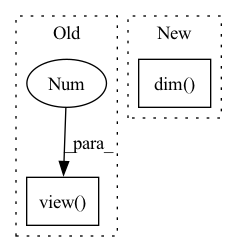

Pattern ID :21666

Before Change
// Apply style
x = PixelNorm(x)
style = self.A(w).view(2, -1, self.channels, 1, 1)
x = (1 + style[0]) * x + style[1]
return x
After Change
// Apply style
x = PixelNorm(x)
shape = [-1, 2, x.size(1)] + (x.dim() - 2) * [1]
style = self.A(w).view(shape)
x = x*(style[:, 0] + 1.) + style[:, 1]
return x
In pattern: SUPERPATTERN
Frequency: 4
Non-data size: 2
Instances
Fragment ID: 69181002
Project Name: maximkm/stylegan-anime
Commit Name: eb986e15dc4ff37c57a5f5b9566a29f06ce30eca
Time: 2021-08-22
Author: maximkmwo@gmail.com
File Name: models/StyleGAN.py
M Class Name: AdaIN
N Class Name: AdaIN
M Method Name: forward(3)
N Method Name: forward(3)
M Parent Class: nn.Module
N Parent Class: nn.Module
M File Name: models/StyleGAN.py
N File Name: models/StyleGAN.py
M Start Line: 97
M End Line: 103
N Start Line: 93
N End Line: 100
'>
Before Change
return mean, std
def log_prob(self, x, z):
mean_std = self.net(z.view(-1, *z.size()[2:])).view(
*z.size()[:2], x.size(1) * 2, *x.size()[3:]
)
n_hidden = mean_std.size()[2] // 2
After Change
var = torch.exp(mean_std[:, n_hidden:, ...])
if len(z) > len(x):
x = x.unsqueeze(1)
x = x.repeat(1, z.size()[0] // x.size()[0], *((x.dim() - 2) * [1])).view(
-1, *x.size()[2:]
)
log_p = -0.5 * torch.prod(torch.tensor(z.size()[1:])) * np.log(
'>
Fragment ID: 69180998
Project Name: vincentstimper/normalizing-flows
Commit Name: 249a81366354d8bcf2a6a227869f0091c0a91963
Time: 2023-01-20
Author: vincent.stimper@gmail.com
File Name: normflows/distributions/decoder.py
M Class Name: NNDiagGaussianDecoder
N Class Name: NNDiagGaussianDecoder
M Method Name: log_prob(3)
N Method Name: log_prob(3)
M Parent Class: BaseDecoder
N Parent Class: BaseDecoder
M File Name: normflows/distributions/decoder.py
N File Name: normflows/distributions/decoder.py
M Start Line: 57
M End Line: 66
N Start Line: 56
N End Line: 68
'>
Before Change
self.in_features, cardinality
)
samples = tmp.view(context.num_samples, -1)
return samples
def __repr__(self):
return f"FactorizedLeaf(in_features={self.in_features}, out_features={self.out_features})"
After Change
self.num_features,
self.base_leaf.num_leaves,
)
elif samples.dim() == 5:
assert self.num_features == samples.shape[1]
assert hasattr(self.base_leaf, "cardinality")
assert samples.shape == (
'>
Fragment ID: 69180997
Project Name: braun-steven/simple-einet
Commit Name: e657fc668bd0f87f5e622a8b2549cd9e8ade437a
Time: 2022-01-11
Author: steven.lang.mz@gmail.com
File Name: simple_einet/factorized_leaf_layer.py
M Class Name: FactorizedLeaf
N Class Name: FactorizedLeaf
M Method Name: sample(3)
N Method Name: sample(3)
M Parent Class: AbstractLayer
N Parent Class: AbstractLayer
M File Name: simple_einet/factorized_leaf_layer.py
N File Name: simple_einet/factorized_leaf_layer.py
M Start Line: 63
M End Line: 120
N Start Line: 68
N End Line: 147
'>
Before Change
freq = 2. ** fid
for func in (torch.sin, torch.cos):
result.append(func(freq * x.unsqueeze(-2)))
encoded = torch.cat(result, dim = -2).view(ray_num, point_num, -1)
return encoded
After Change
for func in (torch.sin, torch.cos):
result.append(func(freq * x))
encoded = torch.cat(result, dim = -1)
if x.dim() > 2:
ray_num, point_num = x.shape[0], x.shape[1]
encoded = encoded.view(ray_num, point_num, -1)
return encoded
'>
Fragment ID: 69180996
Project Name: enigmatisms/nerf
Commit Name: 6540170a567b47e4c9f65c604c10931ad96d9be5
Time: 2022-07-10
Author: 984041003@qq.com
File Name: py/nerf_helper.py
M Class Name: AnonimousClass
N Class Name: AnonimousClass
M Method Name: positional_encoding(2)
N Method Name: positional_encoding(2)
M Parent Class:
N Parent Class:
M File Name: py/nerf_helper.py
N File Name: py/nerf_helper.py
M Start Line: 37
M End Line: 43
N Start Line: 39
N End Line: 48